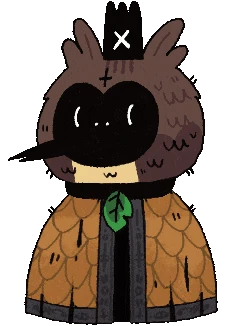

The Lorekeeper

Haro
A storyteller, speaking in old English. They are the bridge between the old faith and the new, from the time of the Old Gods, perhaps being one themselves. It is unclear how (if they are a former god) they survived the wiping out of the time before. However, while some believe they stepped down or gave up their divinity to the bishops, they seem to still retail powers to float and seemingly teleport even into dangerous areas, and seem to be highly aware of what can be and will be, perhaps aiding in them escaping the wrath. They are one of the few to bear a crown (theirs being the fallen crown)–a symbol of divinity and godhood– the only other being Chemach, who remains bound. While much still remains unknown, they may turn up around any corner or clearing with a story to tell, a lesson to be learned.
Future and Past
Lore
- "Eons agone, these lands were rife with gods and their adherents. What befell this pantheon? Alas. 'Tis the nature of beasts to forget, and of Gods to be forgotten. Mayhap they left. Mayhap they slept. Mayhap they devoured and were devoured in turn. Those few who remained spread roots, spun webs, molded this world to meet them and theirs. 'Twere a land of many Gods once. Hundreds. Now..."
- "Hapless Leshy , youngest of the five. T'was[sic] his eyes he lost. Temperamental Heket, with her throat cut neat. Cowardly Kallamar's ears, torn from his head. And Shamura, once the brightest of the five, 'till their skull was split. See no evil, speak naught, hear nothing and think none. The One Who Waits made it so."
- "He was unalike the rest of his kin. While others dealt with flux; chaos, famine, pestilence, war. Things in which their constancy must transpose. And yet he was the inevitable; the obstinate and irresistible. The one who waits. Truly peculiar, 'twould then seem, has appetency to invite the novel and the new, break ancient vow and primordial bond alike. Traditions stagnate and appetites augment, nonetheless. Doubt tears faith asunder."
- "Bonds of familial duty, turned instead to chains. Most voracious of appetites, curbed and contained. Most infectious of ideas cut off and cauterised before given chance to rot and spread. Cruel, verily. Alas, what other recourse was given? How does one kill Death? ... Alas. One cannot."
- "Winds of change blow; dost thou sense it? Around us, the world creaks and turns. Afore, it stood immobile. Motionless centuries grow rust. Now Leshy hath fallen, and hereupon the inhabitants of this land begin their fight anew to presume power. Ye shall not find them so easily dispatched again."
- "Another Bishop struck down; Heket ruled for an aeon, afeard by none. Her dominion being of famine, her peons, now freed, are ravenous in their appetites. Tread warily, lest thou be predated upon."
- "Although a reknowned recreant among his peerage, Kallamar was masterful in the repression of his underlings through ague. Freed of plague, the creatures of Anchordeep strike with renewed vigor. Heed caution, as thou travel therewith."
- "Shamura, now smited. Since time immemorial has their presence weighed heavy upon the beasts within. Their worshippers doth be well versed in the art of war-making. Prithee, move with care. Sharp teeth doth not equate to quick death."